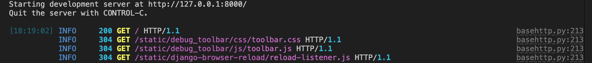

Djereo's features
djereo is a Django project template with opinionated tooling.
When invoked by following the instructions in the Quickstart the user is prompted to answer questions and make choices via a CLI. These answers are used to create a ready-to-use opinionated Django project.
This page documents the features of a Django project as generated by djereo.
 Setup questionnaire
Setup questionnaire
copier.yaml
defines the questionnaire that copier will use to prompt the user when setting up a new
project. The questions defined in this file include sensible defaults (where appropriate)
and validation rules to prevent incoherent answers.
Versions
Users are asked three version-related questions when initialising a project:
Django version
Django is a popular web
framework written in Python. djereo gives you the choice between creating projects using
Django versions:
- 5.1 (latest)
- 4.2 (LTS, long-term support version)
See https://endoflife.date/django for more information.
Python version
djereo (and its base, pycliche)
support Python 3.10 and above. The user's choice is recorded in a .python-version
file and in the requires-python field of pyproject.toml.
See https://endoflife.date/python for more information.
Postgres version
djereo is configured to work with a postgres database and contains utilities and checks
to help with this. See Postgres database below for more information.
Note that it is trivial to switch from postgres to SQLite (a single-line change in .env.in)
if you prefer that database engine.
Keeping versions consistent
The django-version-checks package is used to ensure all environments (local, CI, dev,
prod) use the same versions of Python & postgres.
Semantic Versioning
The generated project follows Semantic Versioning, with users prompted to provide an
initial version at project setup. The project's version is tracked in the version field
of pyproject.toml.
See Release Please below for information on how this version can be used alongside Conventional Commits to automatically generate changelogs and new semver tags.
See https://semver.org/ for more information.
 Git pre-commit hooks
Git pre-commit hooks
Every new project comes with a set of sensible pre-commit git hooks. These are defined in .pre-commit-config.yaml and include:
- Common core hooks such as
check-merge-conflictorend-of-file-fixer. mypyto perform static type checks on Python code.asottile/pyupgradeto convert syntax when the version of Python is upgraded.astral-sh/ruff-pre-committo lint & format Python code at lightspeed with Ruff. Check thetool.ruff.linttable inpyproject.tomlfor a full list of rules and options.DavidAnson/markdownlint-cli2to lint markdown files with rules configured in .markdownlint-cli2.yaml.biomejs/pre-committo lint & format frontend code (JS, TS, CSS) following config in biome.jsonc.adamchainz/djade-pre-committo format Django templates.adamchainz/django-upgradeto automatically migrate code to a new version of Django.alessandrojcm/commitlint-pre-commit-hookto enforce Conventional Commits.
 Optional GitHub features
Optional GitHub features
As part of the setup questionnaire users are asked whether the project they are creating will be hosted on GitHub. If this is the case, GitHub Actions config files are added to their project. The resulting custom actions and workflows are described below.
Custom GitHub actions
Three re-usable custom actions are available:
pre-commit: runs all pre-commit hooks exceptno-commit-to-branchas this would make merge pipelines fail. In workflows (see below) all jobs depend on this action succeeding.sys-check: runs Django's system checks (manage.py check).test: runs all unit tests via thejust testrecipe (see Justfile for details).
See .github/actions/ for the definitions of these actions.
GitHub Actions workflows
Four workflows are defined:
PR (pull request)
Runs whenever a pull request is opened against a branch or an existing PR receives new commits.
CI (continuous integration)
As with PR, but acts when a pull request is closed and changes merged into the main branch.
Release Please
Refreshes a pull request that updates the changelog & bumps the Semantic Version every
time the main branch is merged to.
.release-please-config.json
configures the tool while .release-please-manifest.json
is the source of truth for the latest SemVer tag.
N.B. conventional commits (as enforced by the relevant git hook) are a prerequisite for Release Please to generate changelogs and calculate new SemVer tags.
In order for Release Please to automate the above process, a GitHub Actions 'repository secret'
called RELEASE_PLEASE_TOKEN must exist in GitHub (under
contents: write
pull-requests: write
For more information, consult the release-please-action project.
Dependabot
Configured to update Python dependencies & GitHub actions on a weekly schedule.
See .github/workflows/ and .github/dependabot.yaml for the definitions of these workflows.
🤖 Justfile
Four recipes are ready to use in every new project. Each takes care of setting up a virtualenv and installing dependencies (including the project itself in editable mode).
manage: wrapper around Django'smanage.py. Takes one or more arguments, which defaults to 'help'.runserver: execute Django'srunservermanagement command using Python in Development Mode. This mode shows additional warnings (Deprecation, Import, Resource) and enables extra debug hooks. Development Mode can be disabled by passing an empty string i.e.just runserver ""shell: run Django's management command to drop into a shell. By default this is IPython in all new projects.test: install test dependencies, run all unit tests via Django's test runner and generate and display a coverage report (both on-screen and in HTML format).
 Developer Experience enhancements
Developer Experience enhancements
Use IPython as your shell
IPython, an improved Python shell, is installed as a development dependency. Django picks
it up by default and uses it instead of the default Python shell. Access it directly with
the just shell recipe.
By default IPython's debugger (ipdb) will launch when a breakpoint() is reached while
running the application.
ipdb is also used to debug tests and will launch when a test fails. The file .pdbrc
contains aliases that can be used in ipdb debugger sessions.
Developer tools
The project comes with some ready-to-use developer tools installed as dev dependencies and configured for use locally:
- django-browser-reload: watch project files for changes and reload the browser.
- django-debug-toolbar: display information about the request/response cycle on each page.
- rich: nicer formatting and colours
for
runserverlogs.
Custom system checks
djereo adds two custom system checks that run when the check management command is
invoked.
check_dev_mode: alerts to the application running in debug mode yet Python's Development Mode not being enabled, indicating that there are some warnings and debug hooks you may be missing out on.check_model_names: enforces consistent model names across the application.
The sys-check GitHub action will run the default Django checks and the above custom
checks as part of the continuous integration pipeline.
While strictly speaking not a system test, the django-linear-migrations package is enabled
on all projects generated by djereo. This package updates a max_migration.txt file
whenever makemigrations runs, triggering a merge conflict if there is an attempt to apply
a non-linear migration history.
Use project metadata in the Django app
{{project_name}}/__init__.py exposes project metadata such as version and author information.
To use it in a view:
from django.http import HttpResponse
from {{project_name}} import __version__
def view(request):
return HttpResponse(f"on version v{__version__}")
 settings.py
settings.py
settings.py takes values for certain configuration options from environment variables,
managed via the environs package. When no values are specified, it falls back to sensible
defaults.
settings.py is divided into five sections:
- Setup
Settings such as determining whether the application is running under test conditions or defining theBASE_DIR. - Django Core Settings
INSTALLED_APPSis defined by combining three lists containing apps according to their provenance.LOGGINGis configured to userichwhen DEBUG is True andstructlogotherwise. - Django Contrib Settings
[left empty for the user to populate] - Third Party Settings
Settings fordjango-allauthand dev tools such as the debug toolbar anddjango-version-checks. - Project Settings
[left empty for the user to populate]
The tool.ruff.lint.flake8-tidy-imports.banned-api table in pyproject.toml includes
configuration to have the ruff pre-commit hook enforce a ban on importing the settings
module directly. It suggests that you use from django.conf import settings instead as
this is safer and avoids complications if override_settings is used in tests.
 Logging
Logging
Logging differs between hosted environments (eg. production) and development.
In development (runserver) rich is
used to output coloured logs:

When DEBUG=False, as in production, structlog
is used instead.
Logging configuration is dynamically generated based on the DEBUG environment variable.
The LoggingConfigFactory class is used to generate settings for filters, formaters,
handlers and loggers.
 Postgres database
Postgres database
djereo projects are configured to use a postgres database out-of-the-box.
This can easily be switched to use a SQLite database instead by changing a single line in
the dotenv template, .env.in.
Set up & tear down scripts
The db/ directory contains the following database scripts:
set_up.sqlcreates a postgres user and database with the same name as the project.tear_down.sqlundoesset_up.sqland removes the database and user.
Django's default test database behaviour (creating a new database with a name formed by
prepending the name of the default database with test_) is left as-is.
Database connection string
The database connection is configured in settings.py using the environs package's
'Django database URL' extension. That is, as a single database connection string that is
located in .env as the environment variable DATABASE_URL.
seed_database management command
A seed_database management command is included for quickstart purposes and as a starting
point for you to populate with models needed for local development as your application grows.
In a new project seed_database creates three users: admin, staff and a non-privileged
regular user.
Invoke it with just manage seed_database.
 User authentication
User authentication
Projects generated with djereo follow the 'custom User + UserProfile' pattern common in
modern Django apps. Authentication functionality is implemented via the django-allauth
package for simplicity and to ease future extensibility. A dedicated Django app, users,
centralises models, template overrides and configuration for auth-related features.
users app model factories
Model factories for AuthUser and UserProfile are provided as a convenience. This includes
subfactories to keep tests lean. This means that in a test one may generate a fleshed-out
user with:
from users.factories import UserProfileFactory
from users.models import AuthUser
profile = UserProfileFactory()
assert isinstance(up.user, AuthUser)
Third-party packages
whitenoise
whitenoise is included as a dependency. It is configured to serve static files using Brotli compression and add unique hashes to filenames so that each version can be cached for a long time.
 Tests
Tests
djereo projects come with all the tooling needed to get you writing tests quickly, as
well as a couple of tests ready out-of-the-box.
The PendingMigrationsTests class will fail if any model changes are not yet captured in
a migration, with the aim of negating the possibility of a deployment attempt that fails
due to missing migrations.
The test_checks module tests the custom Django system checks added by djereo.
To run these tests use the recipe just test, passing the same optional arguments you
would when using manage.py test e.g. just test package.module.